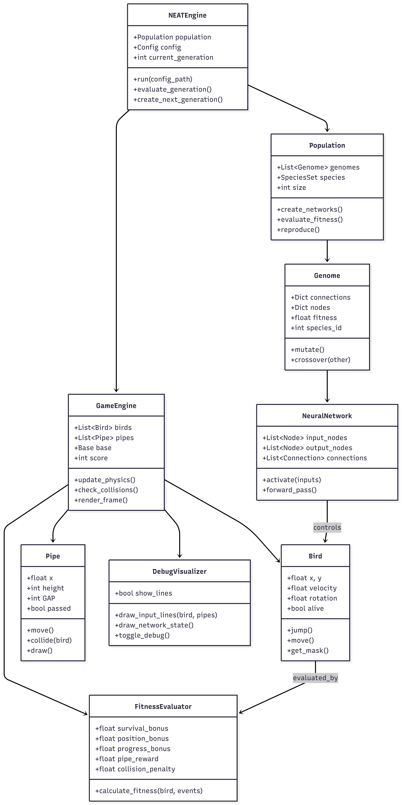

System Architecture
High-level system design showing component interactions and data flow
Component Architecture
The system consists of four main layers: input processing, NEAT engine, game simulation, and fitness evaluation. The NEAT engine manages population evolution while the game environment provides the fitness landscape.
Key Components
- Population Manager: Handles 20 genomes per generation
- Neural Networks: Feedforward networks created from genomes
- Game Environment: Physics simulation with collision detection
- Fitness Evaluator: Multi-component reward system
- Species Handler: Automatic grouping based on compatibility

Data Flow Architecture
Data flows from genome initialization through neural network creation, game simulation, fitness evaluation, and back to population evolution in a continuous cycle.
Data Processing Stages
- Input: Game state (bird position, pipe locations, velocity)
- Processing: Neural network forward pass with tanh activation
- Output: Jump decision (threshold-based)
- Feedback: Fitness scores drive evolutionary selection